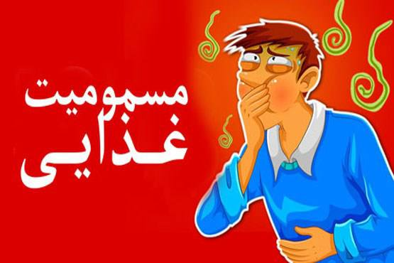

مسمومیت و یا گاز گرفتگی به خاطر تنفس گاز خطرناک کربن مونوکسید ایجاد خواهد شد. این مسمومیت که به میتوان توسط انواع وسایل گازسوز از جمله بخاری گازی، آبگرمکن گازی ، پیکنیکی و حتی گاز ذغال ایجاد شود که در بیشتر مواقع در زمستان دیده میشود. اگر مکان مورد نظر دودکش یا تهویهٔ مناسب نداشته باشد یا مسدود باشد این اتفاق خواهد افتاد و کربن مونوکسید منتشر شده امکان خروج نمییابد و در محیط منتشر شده و سبب مسمومیت و در نهایت مرگ میشود. این نوع مرگ که بر اثر گاز گرفتگی اتفاق میوفتد «مرگ خاموش» مینامند.
علائم گاز گرفتگی هم مانند سرماخوردگی بود و علائمی مانند سردرد، سرگیجه و سوزش چشم. حالت تهوع و … دارد.
مونو اکسید کربن، یک گاز سمی است که طعم و بو ندارد و در مقادیر کمتر از ۵۰ppm خطری ندارد و بین ۵۰ تا ۱۰۰ ppm میتواند سبب ایجاد عوارض نورولوژیک شود و اما در مقادیر بیشتر از ۱۰۰ppm خطر مرگ داشته و در مقادیر بالاتر از ۲۰۰۰ppm نیز سبب مرگ فوری میشود. (در کمتر از ۲ دقیقه).
مونواکسید کربن گازی است که در اثر سوختن ناقص مانند سوختهای فسیلی نفت، گاز، بنزین، گازوئیل و زغال چوب حاصل میشود و چون گازی بیرنگ و بیبو و بیمزه و غیر محرک است مسمومیت با آن به آسانی رخ میدهد. میل ترکیبی منواکسید کربن با هموگلوبین بیشتر از اکسیژن بوده و در خون با هموگلوبین ترکیب پایداری تشکیل میدهد به تدریج با بالا رفتن میزان مونواکسید کربن در خون، میزان هموگلوبین آزاد و در دسترس برای انتقال اکسیژن کاهش یافته و در نتیجه اکسیژن رسانی به بافتهای بدن از جمله مغز کاهش میابد و سبب بروز مسمومیت شده و سیستم عصبی دچار اختلال میگردد و قدرت هر گونه اقدامی از فرد مسموم سلب میشود. هموگلوبین که بخشی از سلولهای قرمز خون و حامل اکسیژن به بافتهای بدن است با مونوکسید کربن بسیار سریعتر از اکسیژن ممزوج شده و بنابراین هیچ مکانی برای حمل اکسیژن توسط هموگلوبین باقی نمیماند.
استفاده از وسایل گرمایشی استاندارد در پیشگیری از این مسمومیت از اهمیت بالایی برخوردار است. کنترل و رفع انسداد منافذ مسیر دودکش قبل از راه اندازی بخاری بهترین راه پیشگیری از بروز حوادث مسمومیت بهشمار میرود.
رنگ مطلوب شعلهٔ بخاری و سایل پختوپز آبی است. چنانچه رنگ شعله قرمز، زرد یا نارنجی باشد، نشانگر نقص در سوخت رسانی و کمبود اکسیژن در محیط است که سریعاً باید بررسی شود.
در صورت استفاده از وسایل گرمایشی مانند بخاری و شومینه، نباید تمامی روزنههای جریان هوا در منزل و به ویژه اتاق خواب مسدود شود.
این دستگاهها باید در راهروها و در نزدیکی اتاق خوابها نصب شوند. دو بار در سال باید باتری این دستگاهها چک شود. اگر زنگ این دستگاهها به صدا در آمد، خانه را ترک کرده و به سرعت با آمبولانس یا آتش نشانی تماس بگیرید.
خارج كردن افراد مسموم از محل آلودگي و ورود آنها به هواي آزاد اولين اقدام در مواجهه با افراد دچار مسموميت است، براي اين كار بايد روي دهان خود را با دستمال مرطوب پوشانده و وارد محل شد. بعد از آن بايستي در و پنجره ها را سريع باز كرد و با اورژانس و آتش نشاني تماس گرفته و آدرس دقيق را به آنها داد. ندادن هيچ نوع خوراكي و نوشيدني به بيمار ، بستن اتصالات گاز، خودداري از روشن كردن لامپ و آتش از جمله موارد ديگري كه بايستي مورد توجه قرار گيرد.
